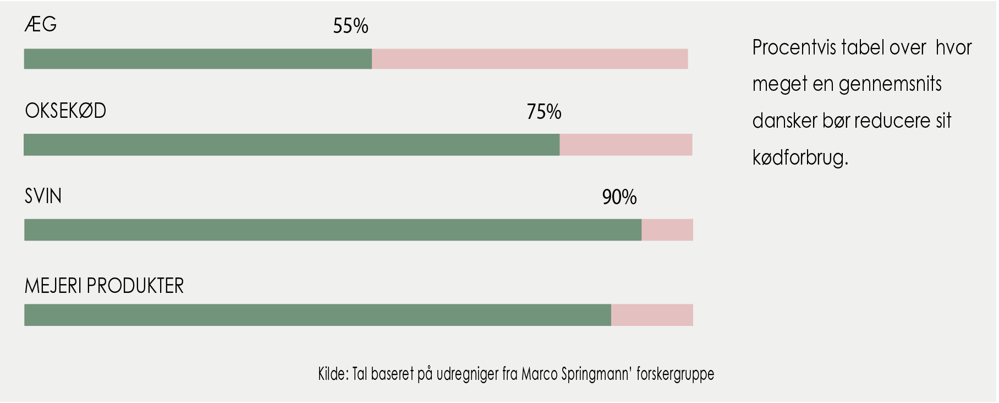

FORSKNING:
Vores kødforbrug bliver klimaets undergang

Der skal ske en drastisk reduktion i vestens kødforbrug, hvis vi skal undgå fatale klimaforstyrrelser. Ligeledes er det nødvendigt, at der sker store ændringer i det animalske landbrug, hvis kloden fortsat skal brødføde menneskeheden. Allerede i dag laver fødevareproduktionen store skader på miljøet. Drivhusgasser fra husdyr, et absurd højt vandforbrug i landbruget, skovrydning til husdyrsfoder, store tørkezoner og døde zoner i havet fra forurening. Produktionens skader på miljøet vil tiltage, hvis ikke vi handler nu. Dette grundet en stigning til 10 mia. mennesker allerede i 2050. En konsekvens heraf er et boom i velstand og en tredobling i indtægter, hvilket giver muligheden for, at flere mennesker kan spejle sig i vestens kødrige kostvaner.
"spis 90% mindre kød"
Reduktioner op imod 90% af den gennemsnitlige verdensborgers forbrug af kød er afgørende for at undgå de farlige klimaændringer, viser den hidtil mest omfattende analyse af fødevaresystemets indvirkning på miljøet. I stedet skal vores diæt bestå af grøntsager, frugter, frø og nødder. Forskningen, som er ledet af Professor Marco Springmann ved Oxford University, er den hidtil mest grundige til dato. Hans forskning kombinerer data fra samtlige lande med det formål at vurderer fødevareproduktionens indvirkning på det globale miljø, og hvordan denne truende fødevarekrise kan holdes i skik. Den nye forskning viser, at menneskehedens forbrugsvaner vil overstige og ødelægge kritiske miljøgrænser. Der risikeres jordens bæredygtighed, hvis vi er interesserede i, at vi fortsætter vores nuværende fødevareforbrugsvaner.” Udtaler Marco Springmann.
Konklusion: Planter redder jorden
I forsøget konkluderer Marco Springmann blandt andet: ” Klimaændringer kan ikke begrænses tilstrækkeligt uden kostændringer i retning af mere plantebaserede kostvaner. Vedtagelsen af mere plantebaserede "flexitariske" kostvaner globalt kan reducere drivhusgasemissionerne i fødevaresystemet med mere end halvdelen og reducere andre miljøpåvirkninger såsom dem fra gødningsanvendelse og brugen af afgrøder og ferskvand fra en tiendedel til en fjerdedel.” Men Marco Springmann er dog klar over, at adfærdsændringer kan være meget svære. Tros dette fastlægges der nu et entydigt bevis på, at vi er nødt til at omlægge vores kostvaner, hvis menneskeheden skal fortsætte på en bæredygtig planet uden klimakatastrofer, tørke og oversvømmelser.
KONTAKT